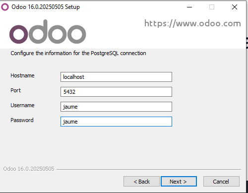
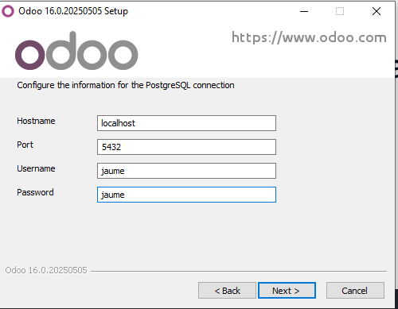
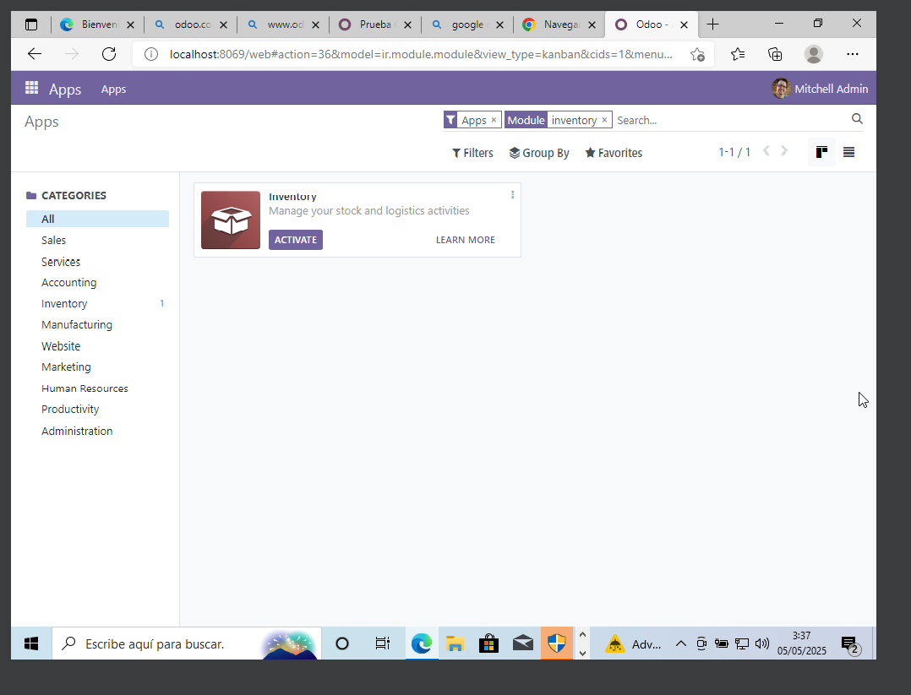
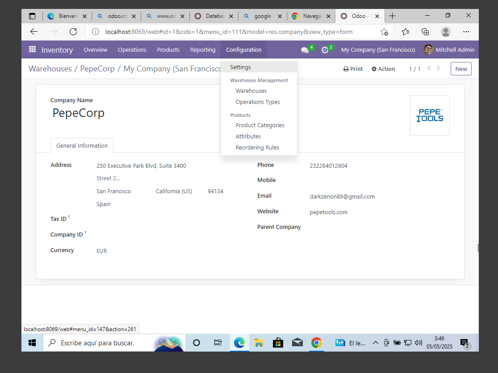
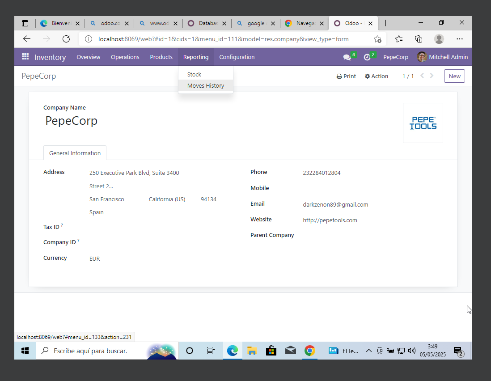
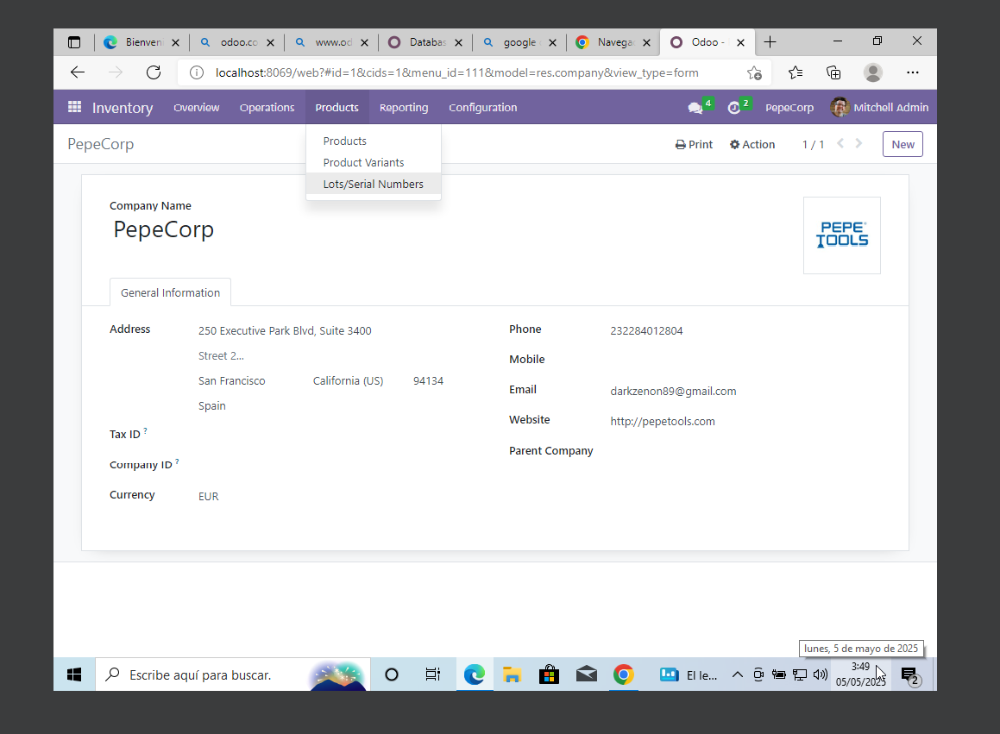
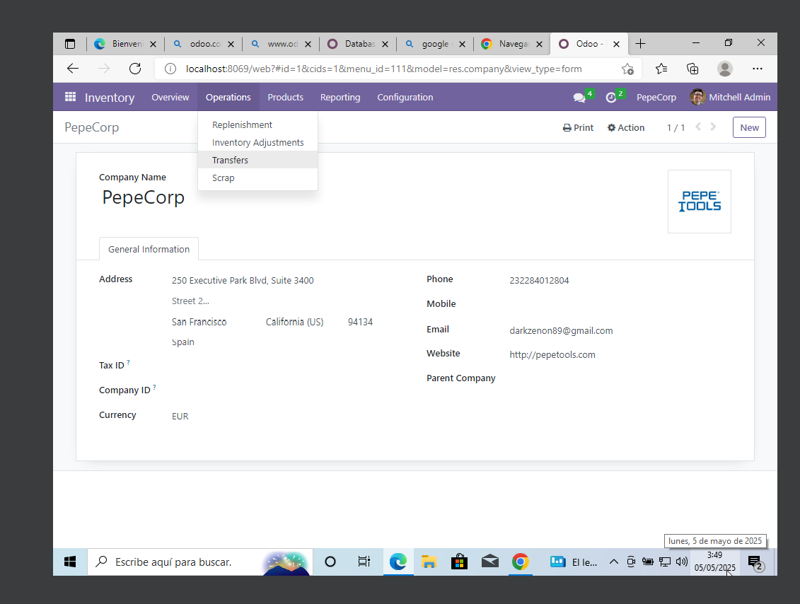
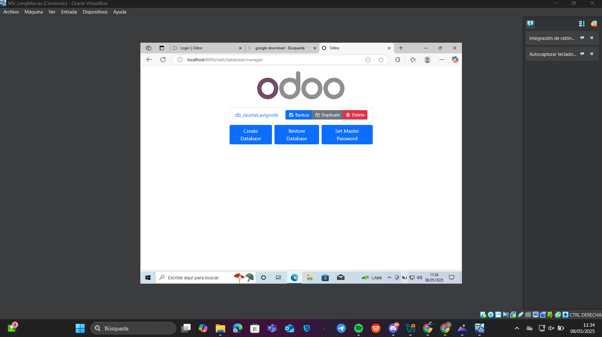
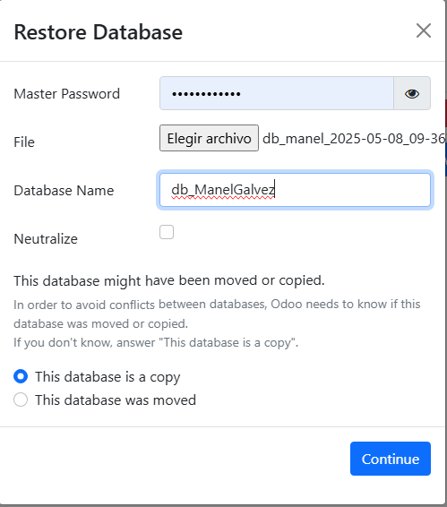
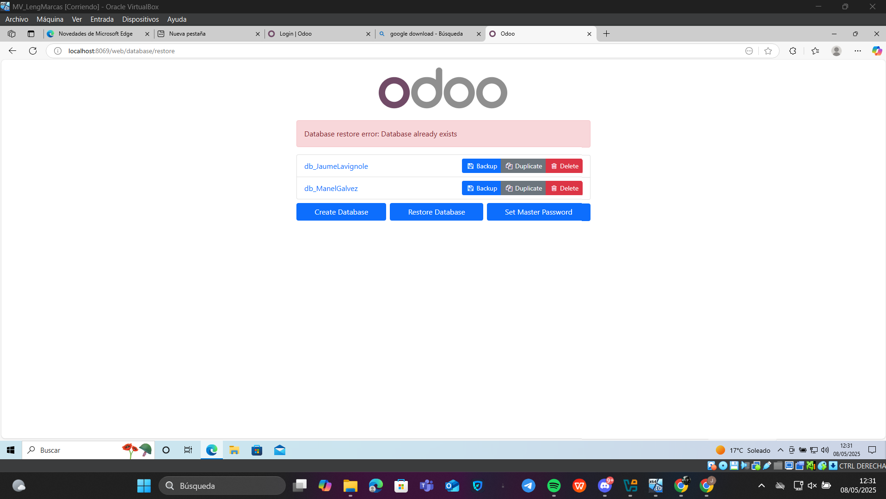

Implementación de Odoo 16 Community - Módulos: Inventario y Facturación
1. Guía de instalación y configuración básica de Odoo 16
Se ha instalado Odoo 16 Community en una máquina virtual Ubuntu 22.04. La base de datos se ha nombrado como db_NombreAlumno y se ha marcado la opción de “demo data”.
- Tener conexión a Internet
- Descargar Odoo 16 desde sitio oficial
- Ejecutar el .EXE para instalar Odoo y los complementos de PostrgreSQL y Odoo Server, los cuales vendran marcados por defecto
 

- Anotar la informacion mostrada en la imagen:

- Acceder vía navegador: http://localhost:8069
2. Módulos seleccionados
Módulo 1: Inventario
Justificación: El módulo de Inventario es esencial para la gestión eficiente de productos, lotes, ubicaciones y movimientos dentro de una PYME.
Instalación: Desde el panel de “Aplicaciones”, buscar “Inventario” e instalar.
Funcionamiento:
- Permite dar de alta productos y configurarlos como almacenables o consumibles.
- Gestión de ubicaciones internas, proveedores y rutas logísticas.
- Creación de órdenes de recepción y envíos.
- Seguimiento de movimientos de stock en tiempo real.
Ejemplo: Para dar de alta un producto: Inventario > Productos > Crear > Rellenar nombre, tipo, precio, etc.
Imagenes Complementarias:





Módulo 2: Facturación
Justificación: La facturación automatizada es clave para mantener una contabilidad ordenada y cumplir con obligaciones fiscales.
Instalación: Desde el panel de “Aplicaciones”, buscar “Facturación” e instalar.
Funcionamiento:
- Permite emitir facturas de venta y gestionar facturas de proveedor.
- Integración con contabilidad para conciliación bancaria.
- Generación de informes de impuestos y cuentas pendientes.
- Automatización de recordatorios de pago y facturación recurrente.
Ejemplo: Para emitir una factura: Facturación > Clientes > Facturas > Crear.
Imagenes Complementarias:


3. Copia de seguridad y restauración de la base de datos
Una vez instalados los módulos, se realizó una copia de seguridad de la base de datos:
- Acceder a Database Manager
- Seleccionar la base de datos db_NombreAlumno
- Hacer clic en “Backup” y guardar el archivo .zip generado.
Para restaurar:
- En el ERP del compañero, acceder al mismo gestor de bases de datos.
- Hacer clic en “Restore”, subir el archivo .zip e introducir el master password.
- Verificar que los módulos, datos demo y configuraciones se restauraron correctamente.
Efectos: Toda la configuración, usuarios, módulos y datos fueron restaurados en el entorno del compañero, replicando el estado original.
Imagenes Complementarias:




4. Conclusiones
- Odoo es una herramienta potente y flexible para la gestión empresarial de una PYME.
- El módulo de Inventario facilita la organización de stock y logística.
- El módulo de Facturación automatiza la gestión de pagos y cobros.
- La copia de seguridad permite una portabilidad rápida del sistema entre diferentes equipos.